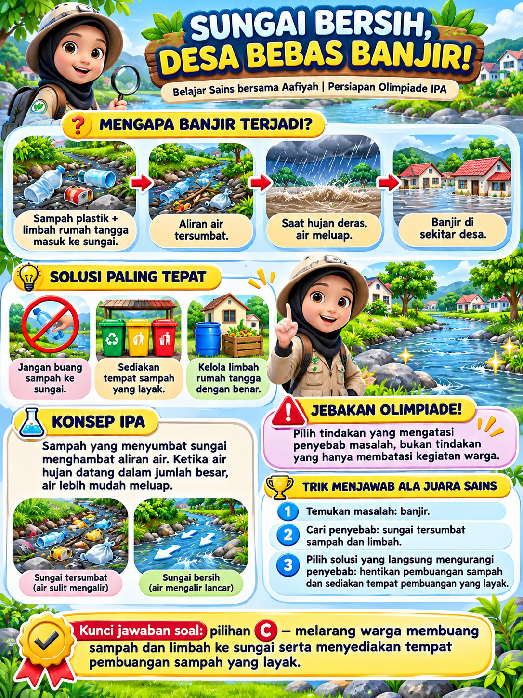

🌊 Materi 04 — Menjaga Sungai dan Mencegah Banjir
Belajar • Berpikir • Bereksplorasi • Berprestasi
🖼️ Infografis Materi
Amati ilustrasi secara berurutan. Gambar asli dipertahankan utuh.

🔬 Konsep Inti
- Sampah dan limbah yang masuk ke sungai dapat mencemari air dan menyumbat alirannya.
- Aliran terhambat membuat air lebih sulit mengalir dengan lancar.
- Saat hujan deras, jumlah air di sungai bertambah. Jika alirannya terhambat, air lebih mudah meluap.
- Pencegahan: jangan membuang sampah/limbah ke sungai, sediakan tempat pembuangan yang layak, dan kelola limbah rumah tangga dengan benar.
💡 Analogi: sungai seperti jalur untuk mengalirkan air. Sampah yang menumpuk seperti penghalang di jalur tersebut.
🏡 Contoh Sehari-hari
Jika selokan di depan rumah dipenuhi daun dan plastik, air hujan bisa mengalir lebih lambat dan menggenang. Membersihkan sumbatan membantu, tetapi mencegah sampah masuk kembali juga penting.
⚠️ Jebakan Olimpiade!
- Jangan menyimpulkan bahwa sampah adalah satu-satunya penyebab semua banjir.
- Membatasi anak bermain di sungai tidak menghilangkan sumbatan sampah.
- Membersihkan sungai sekali saja belum cukup jika sampah terus dibuang ke sungai.
- Pilih solusi yang langsung berkaitan dengan penyebab yang ditemukan pada soal.
🏆 Trik Penalaran Juara
- Temukan masalah yang disebutkan dalam soal.
- Cari penyebab berdasarkan bukti atau hasil pengamatan.
- Hubungkan penyebab dengan akibat melalui urutan sebab-akibat.
- Pilih tindakan yang mengurangi penyebab dan mencegah masalah terulang.